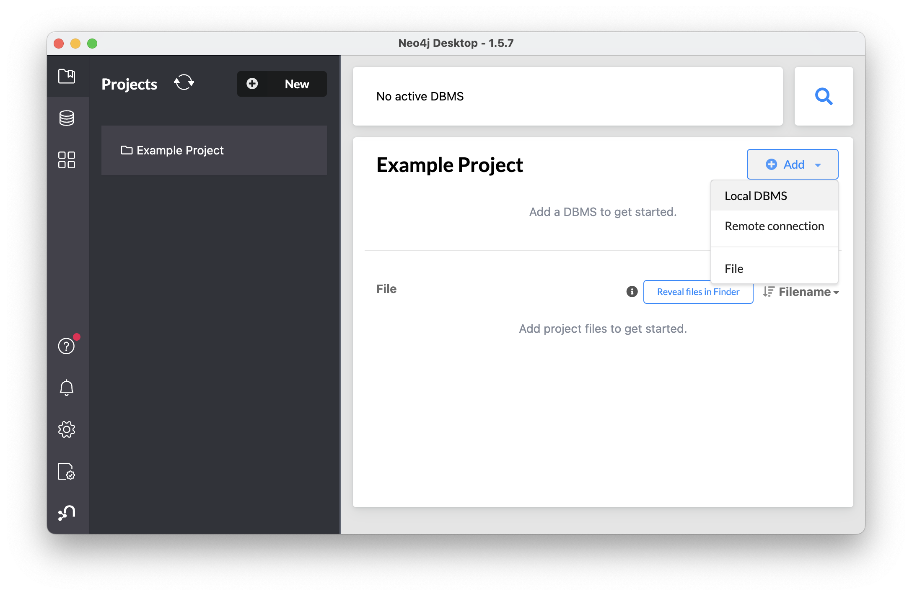
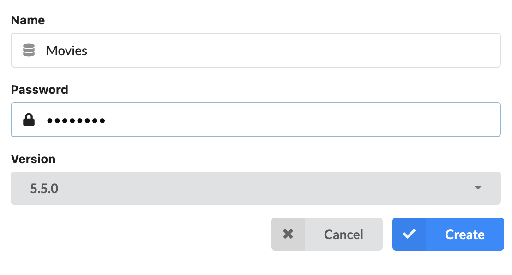
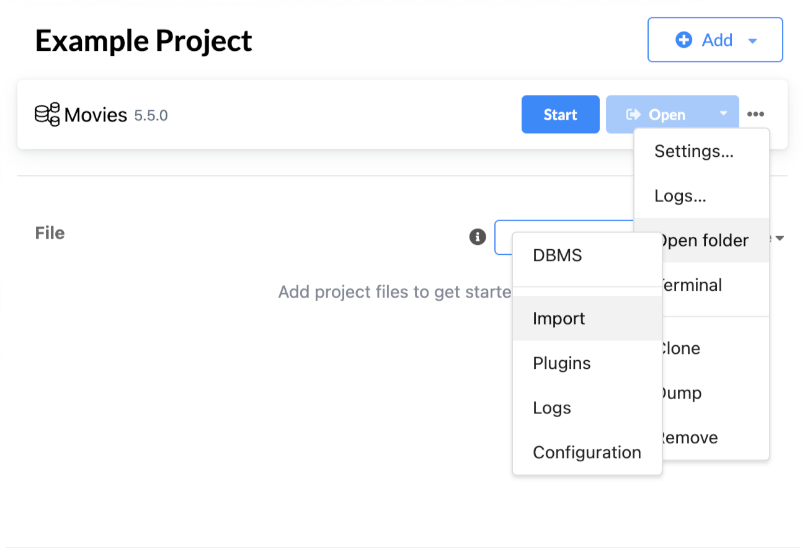
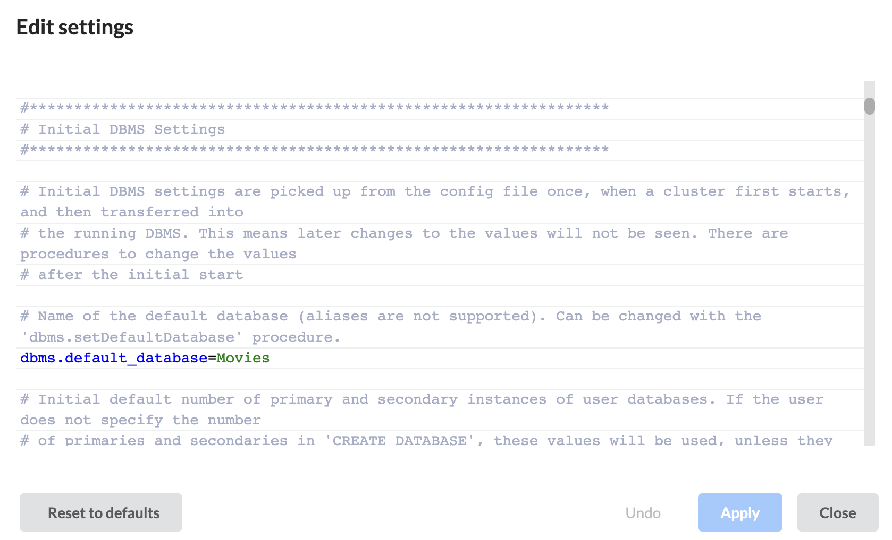
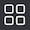
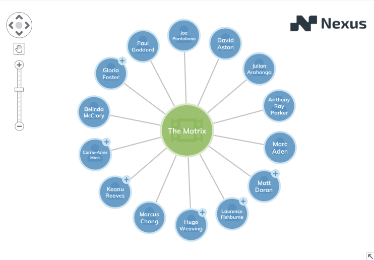

Neo4j Tutorial
Introduction#
This guide will help you integrate Nexus with Neo4j, one of many popular databases you can use with Nexus.
This tutorial uses the Neo4j Javascript driver to connect a simple Nexus application to a Neo4j database. The driver uses the Bolt protocol to connect to the database, and has three advantages over using a REST API/HTTP protocol:
- Speed – binary encoding means less data gets sent over the wire, and access is faster.
- Performance – using Websockets, high volumes of queries are executed more quickly, giving higher throughput and lower latency.
- Security – Bolt has TLS security built and enabled by default in to protect the data connection.
For more information on how you can load your formatted data into Nexus, see also Loading Data.
Step 1: Setting up the environment#
To connect our Nexus application to our Neo4j database locally, make sure you have
the latest version of Node.js installed.
To check your version, you can run node -v in the console.
First, download our Neo4j Demo source files from the link below:
Download Neo4j DemoThis will download the demo as a neo4j.zip archive. Unzip it into a neo4j directory.
Next, download the Nexus package from the link below:
Download Nexus 7.5.0-6286156683This will download Nexus as a graph-nexus-<version>.tgz file. Place this file in the neo4j directory.
In the terminal from the neo4j directory, add Nexus as a package dependency:
npm add file:./graph-nexus-1.0.0.tgzFinally, download and install the Neo4j Desktop application from the Neo4j website. Once you've installed it, continue to Step 2 of this tutorial.
Step 2: Creating a Neo4j database#
Open the Neo4j Desktop application.
The application opens in an Example Project. Add a new database by clicking the Add button and selecting 'Local DBMS':

Set the database name to 'Movies' and the password to 'graph-nexus'. We will need these details later.

Hover the mouse over the Movies database to display the context menu.
Click the (...) button, locate the Open folder dropdown and select 'Import':

This opened your local directory to the imports folder of your Neo4j Desktop application.
Copy the two csv source files in ../neo4j-data into this directory. Do not change the file names.
Back on the main app window, click the (...) button again and select 'Terminal' to open a new terminal tab. In the terminal, import our CSV files into a new database:
bin/neo4j-admin database import full --nodes "import/vertex-data.csv" --relationships "import/edge-data.csv" --trim-strings=true moviesWe should also update our settings to specify which database to mount. Click the (...) button and select 'Settings'.
In the Settings window, find the Initial DBMS Settings section to set Movies as our default database:
dbms.default_database=MoviesEnter the database and click Apply. Your Settings window should now look like this:

Now click the Start button to start the database.
We can check that our database was loaded correctly by opening the browser and running a query.
In the left-side vertical navigation bar, locate the

Graph Apps section and select Neo4j Browser.Movies should be the active database in use (with the name displayed in the query window). In the query window, run the following query:
// Get some data
MATCH (n1)-[r]->(n2) RETURN r, n1, n2 LIMIT 25Our Neo4j database is now live and ready for us to query.
Step 3: Connecting Nexus to the database#
Returning to our demo source files, in ../neo4j/neo4j-router.js, update the config object with the password that we set in Step 2 and save your changes.
const configs = {
// The port here should match your server's connection status
boltPath: 'bolt://localhost/',
// The username for the database. The default username is neo4j.
username: 'neo4j',
// The password for the database. This is password we entered above in Step 2.
password: 'graph-nexus',
};Now in our neo4j demo source file directory, install the required node modules using npm and start the application:
npm install && npm startIf you navigate to localhost:8080 you should now see the Nexus app has loaded the data from the local server into the chart:

You have now successfully retrieved data from a Nexus app and loaded it into a chart.
Understanding the application architecture#
Our application is performing three important steps to visualize data from Neo4j in a Nexus chart.
- Send a query to and retrieve data from a Neo4j database,
- Convert this response JSON data into the required Nexus format,
- Display it in our Nexus visualisation.
Let's go through each step in detail.
Querying the Neo4J database#
After running yarn start or npm start,
we create a new local endpoint ('/neo4jdb'), which will use the Neo4j JavaScript driver to
make queries to our neo4j database. The install has already loaded the module
into our node environment.
Our new endpoint receives two arguments, the first is either 'Movie' or 'Actor' and the second is the movie title or actor name. These arguments are inserted into our prepared Cypher queries, and sent to the Neo4J database, which will return a JSON response using the Bolt protocol.
In neo4j-router.js, we import the driver, and then set it up using our
authentication from the config object.
const neo4j = require('neo4j-driver');
// Set up the Neo4j JavaScript driver
const driver = neo4j.driver(
configs.boltPath,
neo4j.auth.basic(configs.username, configs.password),
{ disableLosslessIntegers: true },
);disableLosslessIntegers to true. This is
because Neo4J supports 64-bit integers, but JavaScript engines only safely support 32-bit
integers.Setting this to true ensures we will always return native JavaScript numbers. However, if you are using this data in other applications besides JavaScript this setting may result in a loss of precision.
Once our driver is setup, we are able to create sessions in which to run queries.
Let's take a closer look at the setupEndpoint() function:
function setupEndpoint(app) {
// We add a new endpoint onto our existing express app that accepts a query
app.get('/neo4jdb/:queryType',
async (req, res) => {
// Create a new session in which we can query the database
const session = await driver.session();
// Once our query has been completed, we close our session
res.on('finish', () => session.close());
try {
// We send our query using the run method, using our Cypher query templates
const response = await session.run(queryTemplates[req.params.queryType],
{ nameParam: req.query.name });
// We would also like to return our query as part of the response
// Here we simply update the query with the arguments that were used
let statement = response.summary.query.text.replace('$nameParam',
`"${response.summary.query.parameters.nameParam}"`);
statement = statement.replace('RETURN', '\\nRETURN');
console.info(`Neo4j statement: ${statement}`);
// We return to the client the response as well as the query we used.
res.send({ rawItems: response.records, statement });
} catch (err) {
console.error('Unable to connect to Neo4j', configs);
res.send({ error: 'Unable to connect to Neo4j' });
}
});
}Our returned JSON response will be as follows:
{
"records": [
{
"keys": [
"actorName",
"movieTitle",
"actorId",
"movieId",
"degree"
],
"length": 5,
"_fields": [
"Marc Aden",
"The Matrix",
108,
90,
1
],
"_fieldLookup": {
"actorName": 0,
"movieTitle": 1,
"actorId": 2,
"movieId": 3,
"degree": 4
}
},
...
]
}Converting to Nexus format#
The neo4j-db.js file iterates through returned JSON data and converts it into the correct Nexus format.
As an example, when we receive the above JSON back from the server, the
toNexusGraphFormat() function parses our initial query response.
It converts the 'Marc Aden' response to 2 objects in an array; one link and one node:
items = [
{"id":"108", "type":"node", "t":"Marc Aden", "d": {"degree":1, "type":"actor", "expanded":true}, "tc":false},
{"id":"108-90", "type":"link", "id1":"108", "id2":"90", "c":"#C4C4C4", "w":3}
]The items array is now ready to be loaded into our chart using
chart.expand().